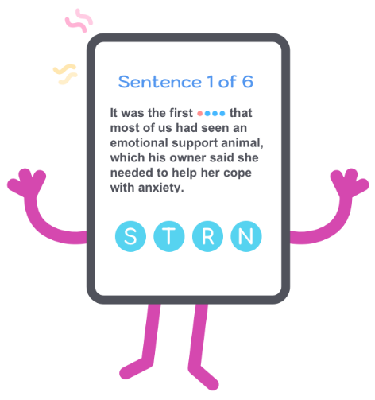

how do you repeat new words? we have the purpose!
HOW TO REPEAT WORDS WITH JOY?

We must as much as possible to help our memory:
– open any part of words
– to give a description of a word
– give a hint
– show all letters
This must be a bit like a crossword puzzle. Due to this process can be fun. The words are simple for repetition and you probably already know them. But the dictionary entry describes the word with lots of meanings and you’ll be a little confusing. Serious help for your memory will have all letters immediately in front of you.
There are two types of prompts:
Word translation.
All of your failures are recorded and for you will be able to repeat the
words where you made mistakes or used the hint.
Knowledge of the core set of words in English is
necessary.
Test yourself. You can recognize simple English words by description
from dictionary article?